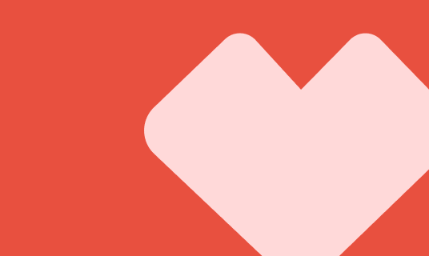
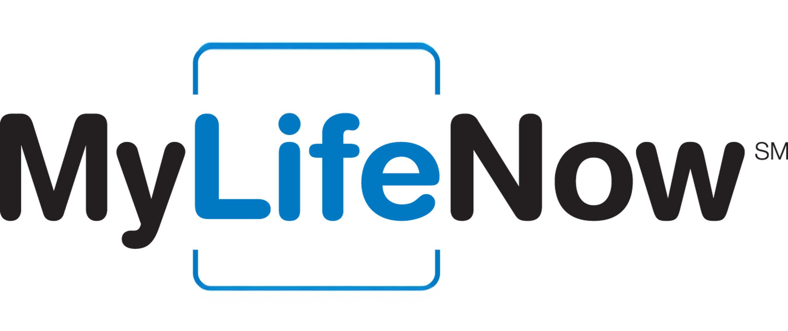

Tanya Simkhovich
Design
20 years transforming complex enterprise challenges into intuitive, accessible digital products
20
Years of Enterprise Design
Passion for Accessibility
5
Patented UX Innovations
Selected Work

design systems
Pulse Design System Documentation Site
Led a documentation redesign initiative for the Digital Pulse design system, unifying a fragmented experience. Through research, testing, workshops, and hands-on prototyping, I built a scalable, multi-platform documentation structure.
View Project
design systems
CVS "Super App" and Pulse Velocity
Captures my approach to building and evolving design systems that balance clarity, accessibility, and scalability. The work focused on creating a stronger foundation that supports both current teams and future growth.
View Project
mobile app
The Weather InSight App
Designed and oversaw the entire implementation cycle of a unique weather app that delivers snapshots of relative local weather information with negative and positive meteorologist highlights.
View Project
web design
John Hancock Participant Site
Successfully launched new John Hancock Retirement Services Participant website reaching 1.7 million users in order to acquire new clients and retain existing ones.
View ProjectI'm constantly experimenting with design patterns, seeking for what works for people navigating complex experiences while building trust and engagement with the product.
Learn more about me